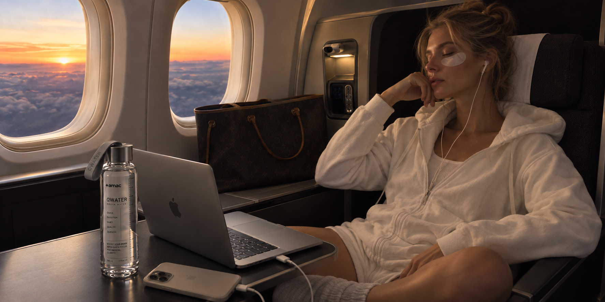
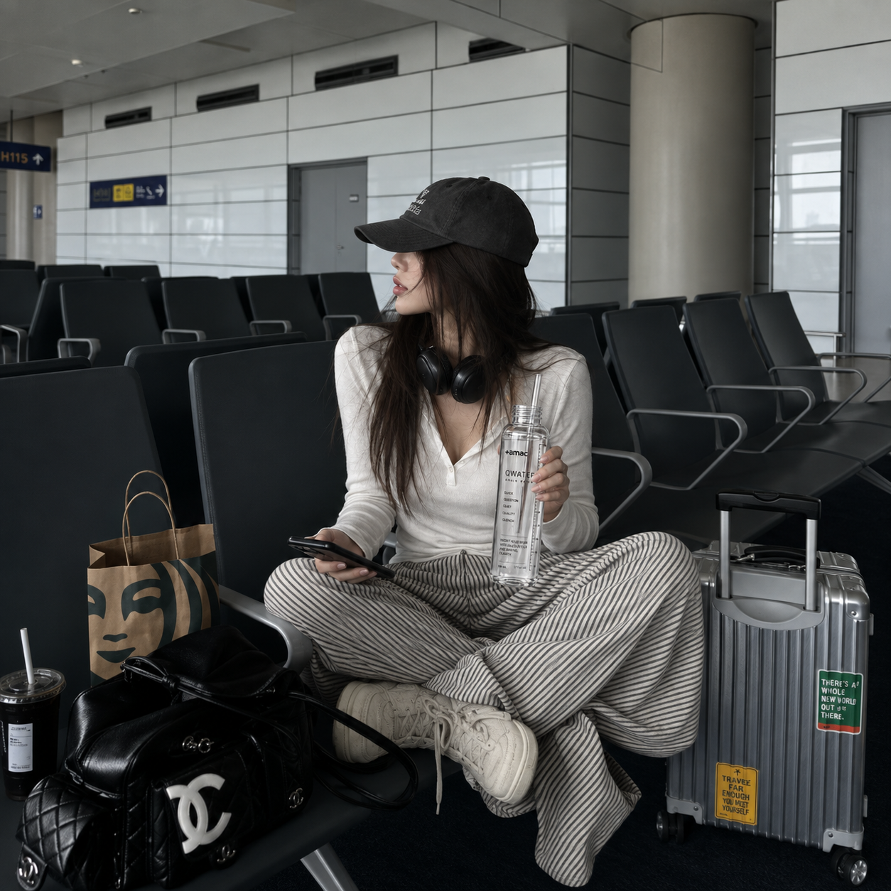
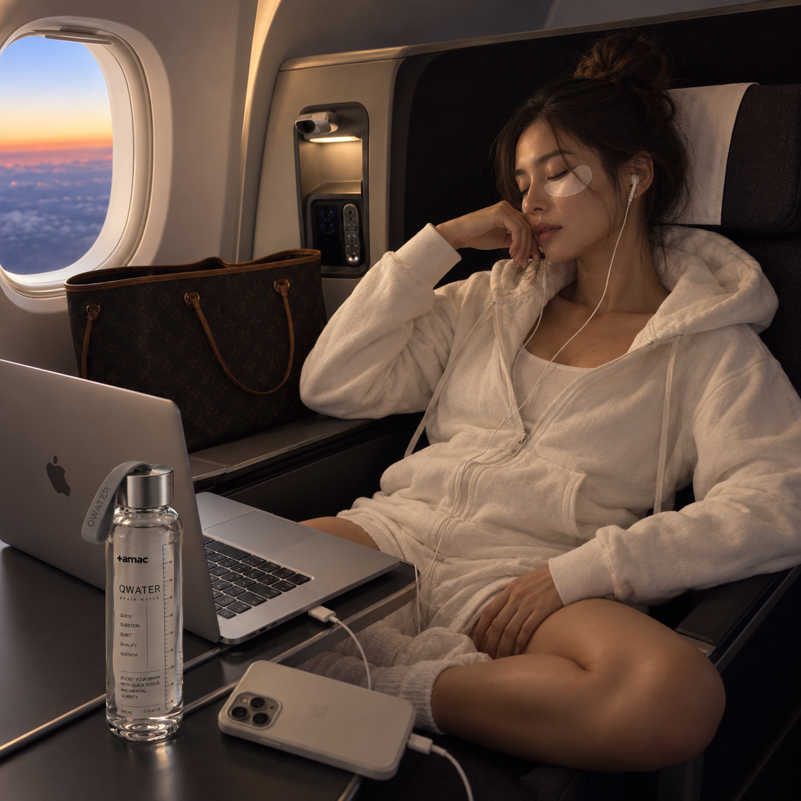
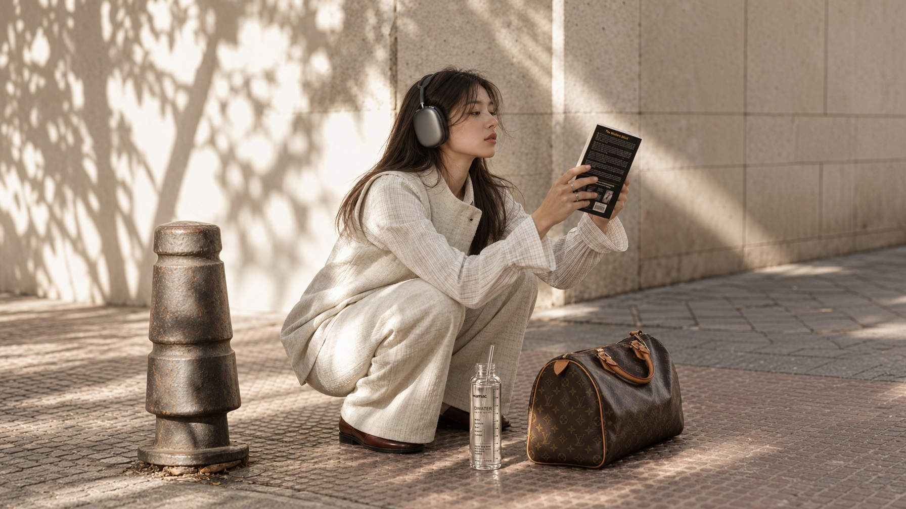

SAME RITUAL.
DIFFERENT HOTEL.
공간이 바뀌면 평소의 생활 패턴도 쉽게 무너집니다.
그래서 여행 가방 안에는 장소와 상관없이 반복할 수 있는 작은 행동이 필요합니다.
Q2 한 포는 그 루틴을 이동 가능하게 만듭니다.
Change the environment and familiar routines can disappear quickly.
That is why your travel bag needs something simple enough to repeat anywhere.
One stick of Q2 makes the ritual portable.
WHEN WORK
FOLLOWS YOU HOME.
마지막 메일 한 통이 또 다른 업무를 부릅니다.
어느 시점에서는 일을 완료하는 것이 아니라 오늘의 일을 종료해야 합니다.
Q2를 그 기준선으로 사용하십시오.
One last email often leads to another task.
At some point, the goal is no longer to finish all work—it is to finish work for today.
Use Q2 as that line.
START BY TURNING OFF
THE NOTIFICATIONS.
Q2만 마시면서 휴대폰 화면을 계속 볼 이유는 없습니다.
제품은 생활습관을 대신할 수 없습니다.
AMAC는 제품과 행동이 함께 있을 때 더 좋은 루틴이 된다고 말합니다.
There is little point in drinking Q2 while continuing to scroll through notifications.
A product cannot replace your habits.
AMAC believes products work best as part of better behavior.
TOMORROW’S FOCUS
STARTS TONIGHT.
Q1과 Q2는 경쟁하는 제품이 아닙니다.
좋은 낮과 좋은 밤은 서로 연결되어 있습니다.
AMAC QWATER가 두 제품을 반드시 함께 보여주는 이유입니다.
Q1 and Q2 are not competing products.
A good day and a good night are connected.
That is why AMAC QWATER presents the two together.
CAFFEINE:
ZERO.
Q2는 밤용 포뮬러입니다.
따라서 카페인을 넣어놓고 동시에 릴랙스를 이야기하지 않습니다.
제품의 목적과 성분의 방향이 같아야 합니다.
Q2 is an evening formula.
We do not add caffeine and then talk about slowing down.
The ingredients should move in the same direction as the product’s purpose.

LESS UNNECESSARY
SUGAR AT NIGHT.
Q2를 또 하나의 단 음료로 만들 이유가 없습니다.
저감미·저당 방향으로 설계해 밤의 루틴과 맞춥니다.
맛은 충분하되 자극적인 음료가 되지 않도록 합니다.
There is no reason to turn Q2 into another overly sweet drink.
It is designed toward a lower-sweetness, lower-sugar profile suitable for an evening routine.
Enough taste. Less unnecessary stimulation.

DON’T LEAVE
RECOVERY TO CHANCE.
좋은 밤이 오기를 기다리는 것과 좋은 밤을 위한 조건을 준비하는 것은 다릅니다.
조명, 화면, 시간, 음료를 하나의 시스템으로 묶습니다.
Q2는 그 시스템의 한 부분입니다.
Waiting for a good night is different from preparing the conditions for one.
Light, screens, timing and what you drink can all become part of one system.
Q2 is one component of that system.

LOWER THE LIGHTS.
LOWER THE PACE.
밝은 사무실에서 어두운 침실로 한 번에 이동하지 마십시오.
저녁에는 천천히 속도를 낮추는 구간을 만듭니다.
Q2는 그 중간 시간을 상징합니다.
Do not go from a bright office to a dark bedroom without a transition.
Create a period in the evening where the pace gradually drops.
Q2 represents that space in between.